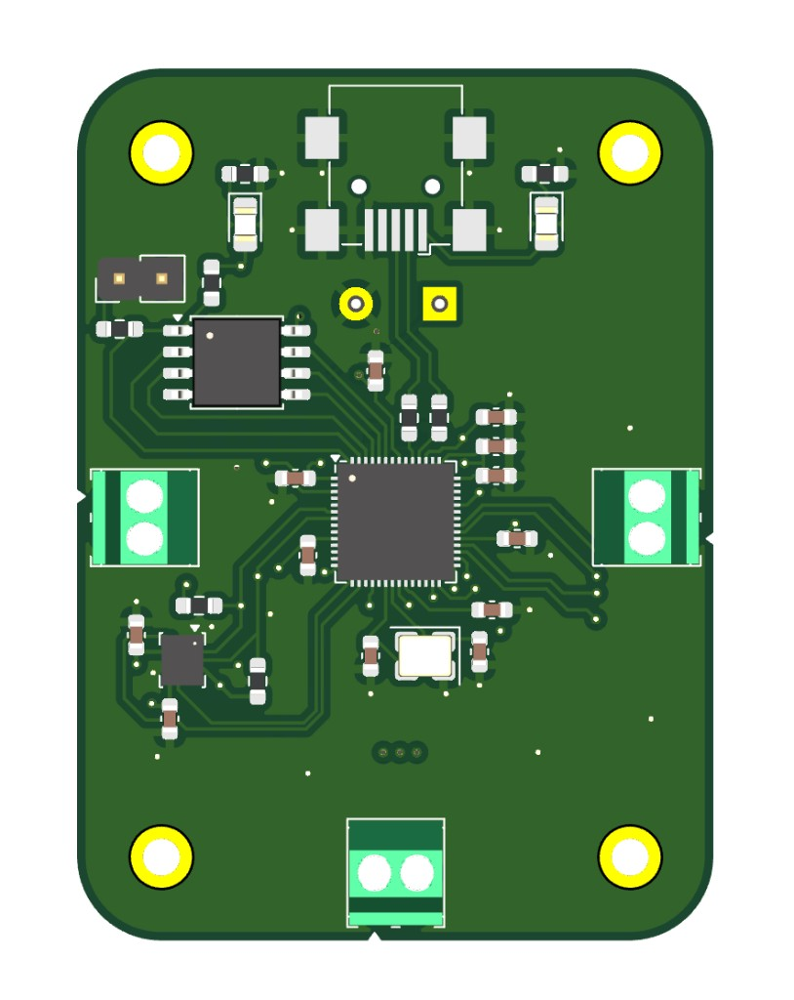
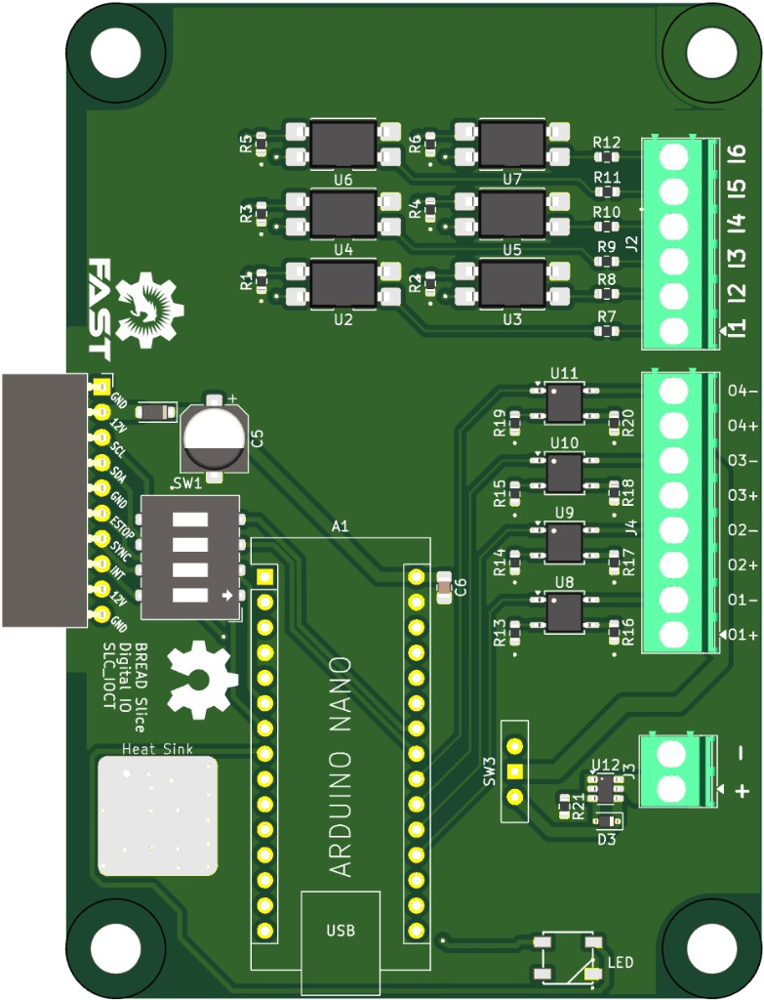

Projects

Three-Phase Inverter
I want to create a robotic actuator from scratch, to learn more about robotics, and as a joint in a 6DOF robotic arm I am designing.
View project →
100W USB PD Source Custom PCB
Custom PCB that takes power from common PC PSU connectors and outputs regulated power over USB-C using USB PD 3.0, up to 100W.
View project →
Custom Altimeter PCB
RP2040-based altimeter PCB for a model rocket, with redundant flash storage and safety-gated e-match deployment.
View project →
Accelerated Weathering Chamber
Automated ASTM G151/G154 weathering chamber for PLA composite filament, including a custom Arduino Nano control PCB for heaters, UV, fans, and sensors.
View project →
Industrial IO Card for BREAD
24V-tolerant digital I/O PCB for BREAD (Broadly Reconfigurable and Expandable Automation Device), an open-source modular automation platform.
View project →
Integrated 6S to 6V Buck Converter
Non-synchronous buck converter stepping a 6S LiPo battery down to a steady 6V for a custom servo driver on a fixed-wing drone.
View project →About
Hey! I'm Ian, a third year mechatronics engineering student at the University of Waterloo! I'm interested in robotics hardware and embedded systems, particularly PCB and electromechanical design.
Since coming to Waterloo, I’ve worked on a wide range of projects, from custom INS solutions for long-range autonomous drones, to controllers for nanometer-resolution air-bearing stages, to modular scientific research instrumentation.
Contact
- Email ixvandensteen@gmail.com
- LinkedIn linkedin.com/in/ianvds